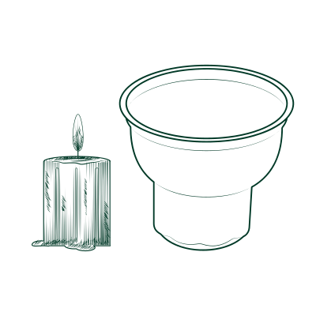
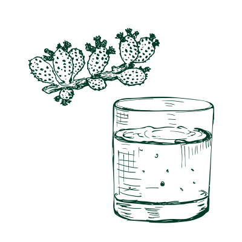
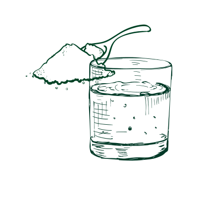

Backbone Pain
Explore those cultural home remedies to see how backbone pain can be treated differently.

×
Cross-cultural: Cupping Therapy
Cupping therapy is a traditional practice in China, the Middle East, and Mexico. It can be done at a clinical center or at home. Cupping therapy helps relieve tension by releasing stress on muscles, increasing blood flow, and relieving pain.
Ingredients:
- Plastic cups or
- Silicone cups or
- Glass cups(for fire cupping)
Steps:
- Apply lotion on the back to reduce the resistance of dragging.
- Place some small lighted candles on the back to create a better heating effect (optional).
- Press the cups to the desired area for no longer than 15 minutes. The heat will be stuck within the cup and help increase blood flow.
- Move the cup in any direction (up & down, back & forth, or in circles).

×
Jamaica: Tuna Plant Drink
Tuna plant drink is a plant-based remedy in Jamaican households. The drink is made from tuna plant that is not a direct painkiller, but it serves as an anti-inflammatory ingredient, while the calcium, magnesium, and potassium it contains support bone health.
Ingredients:
- Tuna plant
- Spring water/coconut water
Steps:
- Carefully cut the tuna plant into slices.
- Soak the slices into a cup of spring water/coconut water for 6-8 hrs

×
Eastern Europe: Mouse Rinse
Mouth rinse with salt and soda is a quick remedy in Eastern European households that helps ease a sore throat immediately.
Ingredients:
- Hot Water
- Salt
- Soda
Steps:
- Prepare a glass of hot water
- Add 1 table spoon of salt to the water.
- Add another 2 tablespoons of soda to the water.
- Stir the water and gargle it, don’t drink it, you will feel better with your throat in a quick second.
